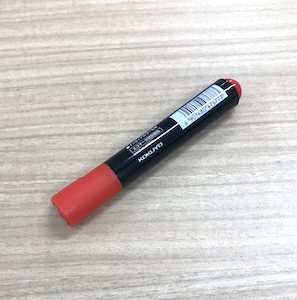
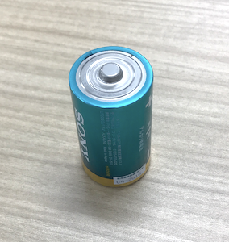

<!DOCTYPE html>
<html>
  <head>
    <meta http-equiv=“Content-Type” content=“text/html; charset=UTF-8”> 
    <script src="../dist/jspsych.js"></script>
    <script src="../dist/plugin-survey-likert.js"></script>
    <script src="../dist/plugin-instructions.js"></script>
    <script src="../dist/plugin-preload.js"></script>
    <link rel="stylesheet" href="../dist/jspsych.css" />
  </head>
  <body></body>
  <script>

    var jsPsych = initJsPsych({
      on_finish: function() {
        jsPsych.data.displayData();
        jsPsych.data.get().localSave('csv','mydata.csv');
      }
    });

    var images = [ // このプログラムで呈示する画像のファイル名を列挙します。フォルダの場所と名前に注意。
        '../img/scissors.png',
        '../img/pen.png',
        '../img/battery.png'
    ];

    // 画像を使うプログラムでは、事前読み込みを行う必要があります。
    // プラグインによっては自動で読み込む場合もありますが、常に手動で読み込むほうが安心です。
    var preload = {
        type: jsPsychPreload,
        images: images,
    }

    var instruction = {
      type: jsPsychInstructions,
      pages: ['<p>このたびは調査にご協力いただきありがとうございます。</p><p>この調査では画像を見ていただき、その画像から受ける印象について回答していただきます。調査に要する時間は１０分です。</p><p>調査の参加に同意をいただける場合には「次へ」をクリックしてください。</p>',
        '<p>今から画像が１枚ずつ表示されます。</p><p>それぞれの画像から受ける印象を「1.まったくそう思わない」から「5.非常にそう思う」の５段階で回答してください。</p>'],
      show_clickable_nav: true,
      show_page_number: true,
      button_label_previous: '戻る',
      button_label_next: '次へ',
    };

    var scale = ["1<br>まったくそう思わない", "2<br>あまりそう思わない", "3<br>どちらでもない", "4<br>ややそう思う", "5<br>非常にそう思う"];

    // Timeline variablesを使いましょう！　https://www.jspsych.org/7.0/overview/timeline/#timeline-variables
    var trial = {
        type: jsPsychSurveyLikert,
        preamble: jsPsych.timelineVariable('image_tag'),
        questions: [
          {prompt: "美しい", name: 'Beautiful', labels: scale, required: true},
          {prompt: "好き", name: 'Favorite', labels: scale, required: true}
        ],
    };

    var main_trials = {
      timeline: [trial],
      timeline_variables: [
        {image_tag: ''},
        {image_tag: ''},
        {image_tag: ''},
      ]
    }

    jsPsych.run([preload, instruction, main_trials]);
    
  </script>
</html>
